Cheese pull do recheio cremoso — abre a semana no apetite.
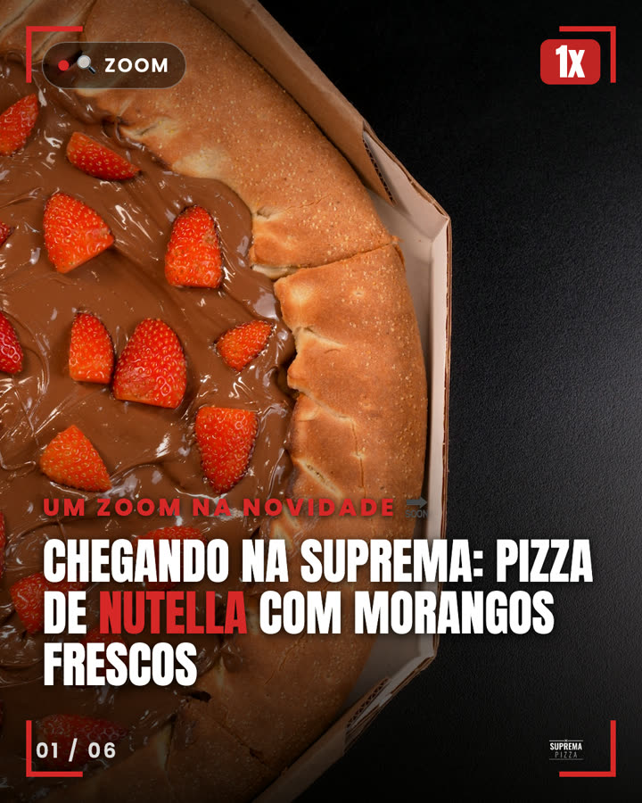
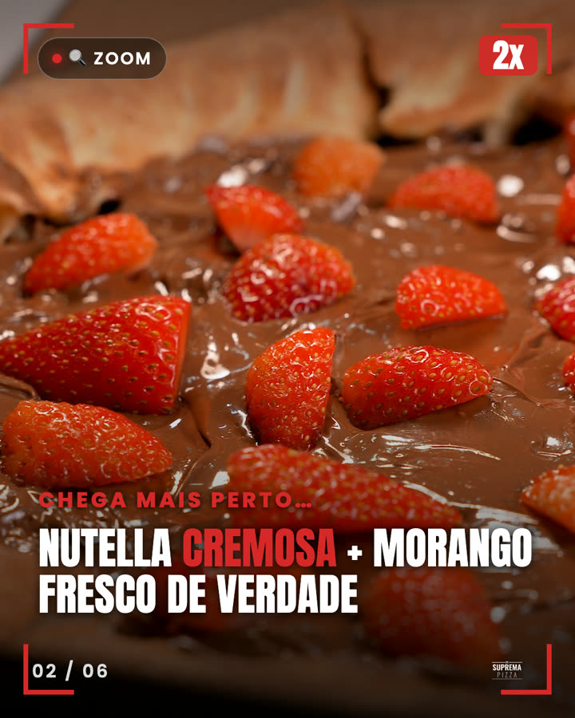
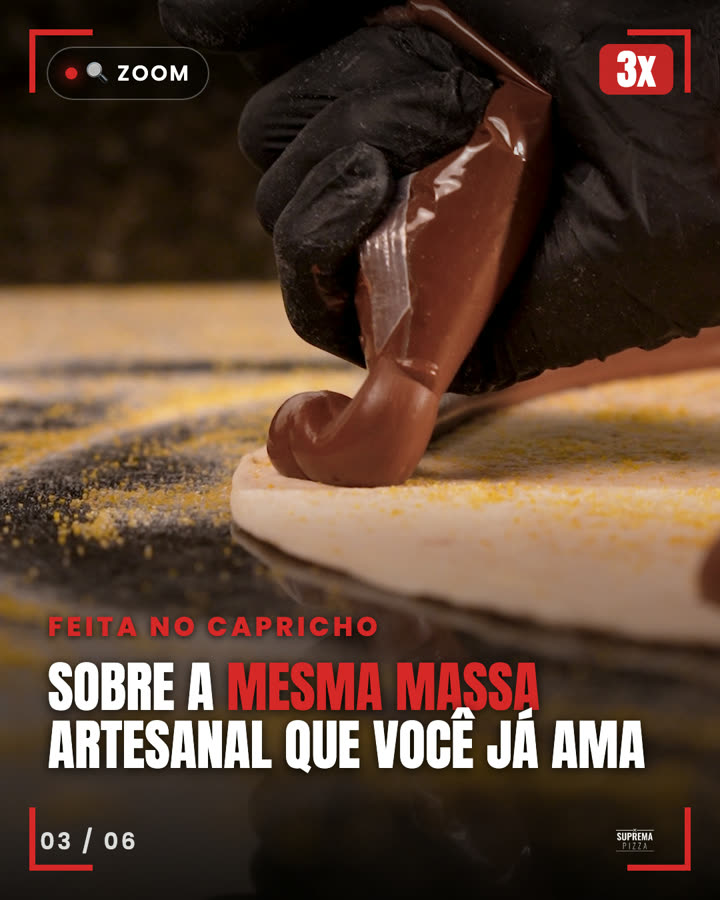
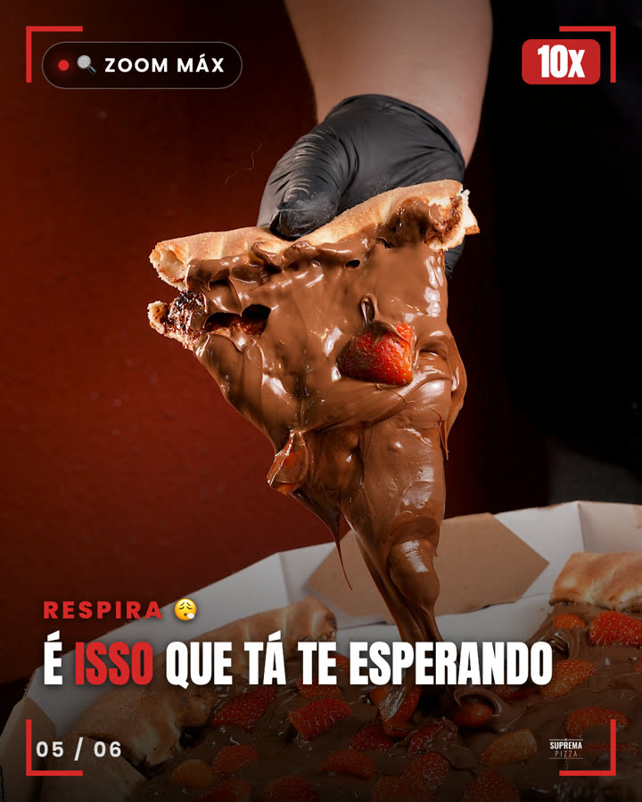
Conceito "zoom": a gente aproxima a Nutella com morangos frescos pra você.
Camarão sobre queijo derretido, assada no ponto.
"Valeu a espera": Nutella de verdade + morango fresco.
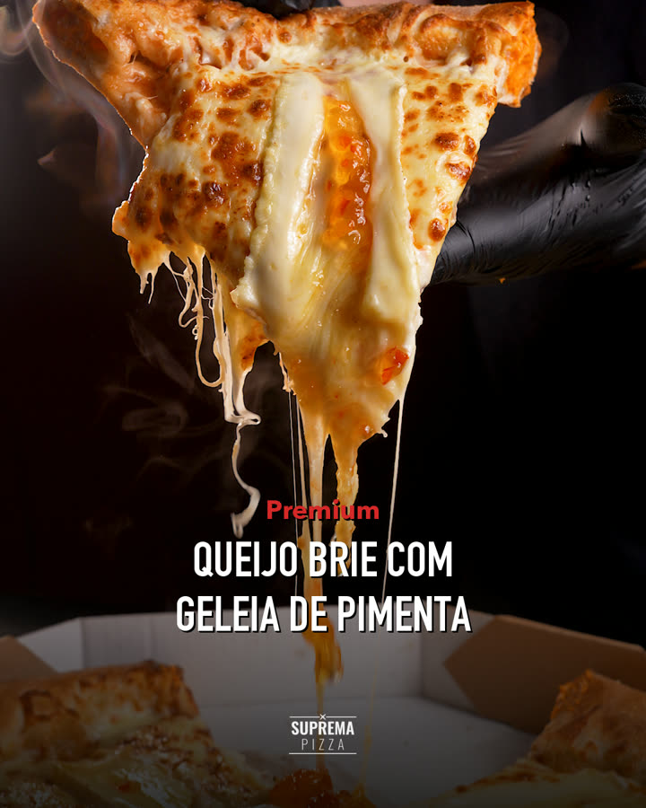
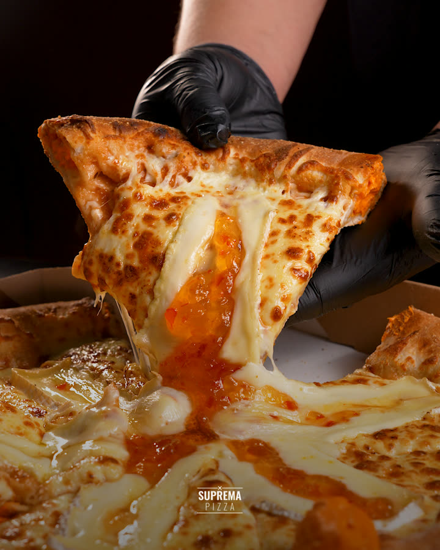
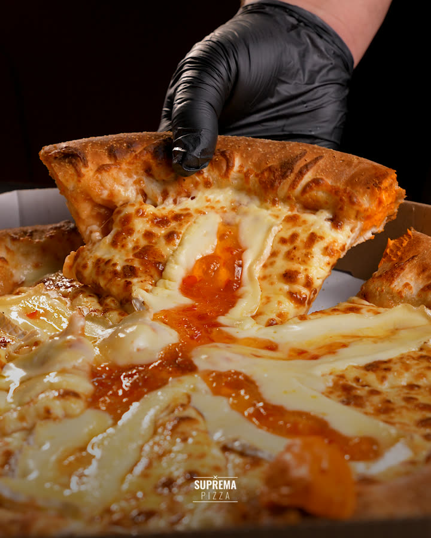
O doce que encontra o ardidinho — premium, maçaricado na hora.
Sazonal — a Suprema vai produzir o material físico desse dia.
"Olha como nasce": montada à mão, queijo sem economia.
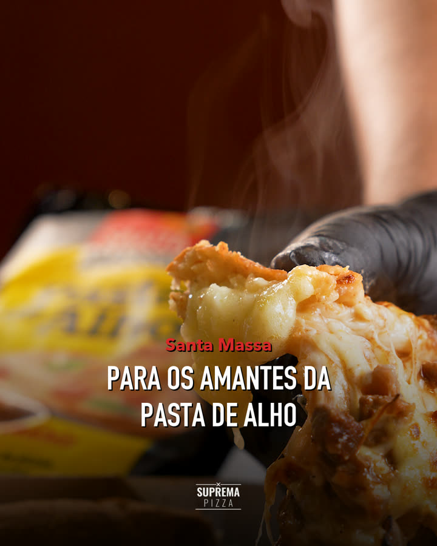
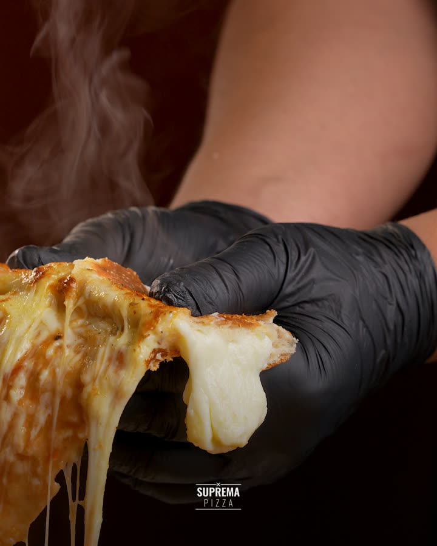
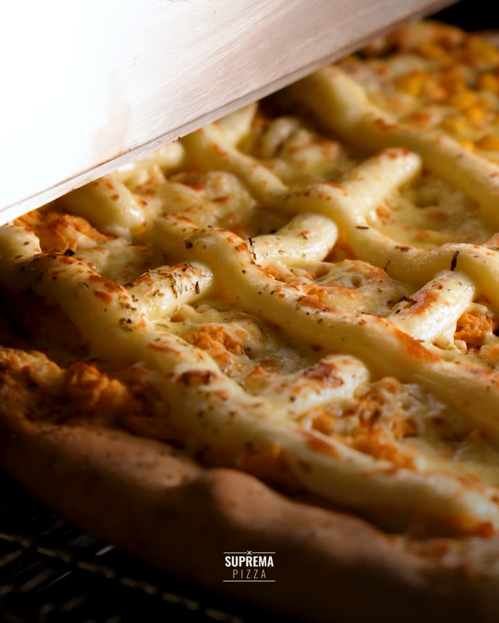
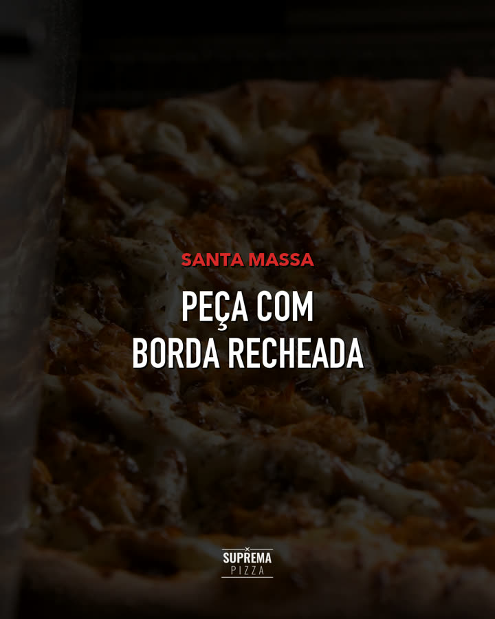
Borda recheada com a pasta de alho da Santa Massa.
Corte cirúrgico, fatia perfeita — boa demais pra não postar.
Brie maçaricado + geleia: doce que encontra o ardidinho.
Arraiá da Suprema — carrossel montado assim que as fotos do sabor chegarem.
"Sobe o som": efeitos sonoros do queijo esticando (ASMR). 🔊 ative o som!
"Existe pizza. E existe A Suprema." Fecho institucional, trilha emocional. ▶ ative o som
Além dos 12 posts no feed, a Suprema mantém a marca ativa com 10 stories em stop motion rodando o mês inteiro — 2 por dia nos dias de postagem, + 3 gatilhos de urgência espalhados. É presença constante sem custo extra de produção.
2 stories de sabor por dia em rodízio + 3 gatilhos nos dias 01, 08 e 15. Resultado: ~29 stories no mês, sem repetir em sequência.
| Seg 01 | Camarão · Alho | + Sua Fatia |
| Qua 03 | Bastidores · Milho | |
| Sex 05 | A Suprema · Nutella | |
| Seg 08 | Geleia+Brie · Camarão | + Cozinha Rodando |
| Qua 10 | Alho · Bastidores | |
| Sex 12 | Milho · A Suprema | |
| Seg 15 | Nutella · Geleia+Brie | + Alguém Pedindo |
| Qua 17 | Camarão · Alho | |
| Sex 19 | Bastidores · Milho | |
| Seg 22 | A Suprema · Nutella | |
| Qua 24 | Geleia+Brie · Camarão | |
| Sex 26 | Alho · Bastidores | |
| Seg 29 | Milho · A Suprema |
12 posts no feed + 10 stories recorrentes rodando o mês inteiro = presença quase diária da Suprema, com qualidade premium e identidade consistente.
E o mais importante: tudo planejado e entregue com antecedência. Esse é o jeito Fenice de trabalhar — você aprova o mês inteiro de uma vez, com calma, e a marca nunca fica sem conteúdo. É assim, mês após mês, que a presença digital cresce de verdade. 🍕🔥
Vocês já investem em cupom no tráfego pago — e funciona. Mas tem um ativo que vocês já pagaram e ainda não estão convertendo: quem já segue a Suprema.
Essa galera já está aqui. Assiste seus stories todo dia, vê seus reels, salva seus carrosséis. Ela já está dentro do seu custo operacional. Dar a ela um cupom exclusivo não custa mídia nova — é pegar um custo que já existe e transformar em investimento de conversão.
Como funciona: cada sabor ganha um código próprio, ativado no dia a dia (stories) e nos lançamentos (reels e carrosséis). Quem acompanha: vê → usa → pede.
| NUTELLA | Nutella com Morangos Frescos |
| CAMARAO | Camarão com Borda de Cheddar |
| BRIE | Geleia de Pimenta com Brie |
| FRANGO | Frango com Catupiry |
| BORDA | Borda de Pasta de Alho · Santa Massa |
| SUPREMA | A Suprema |
E tem bônus: cada código diz qual conteúdo virou pedido — vocês passam a saber o que o orgânico realmente move.